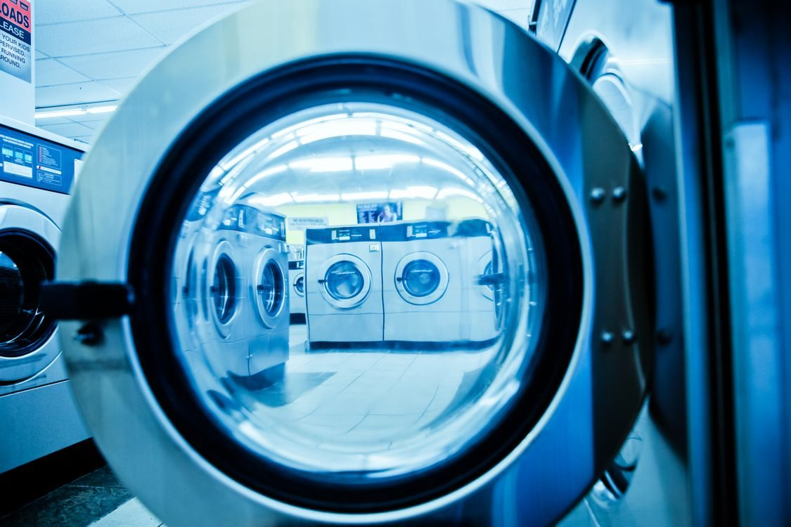
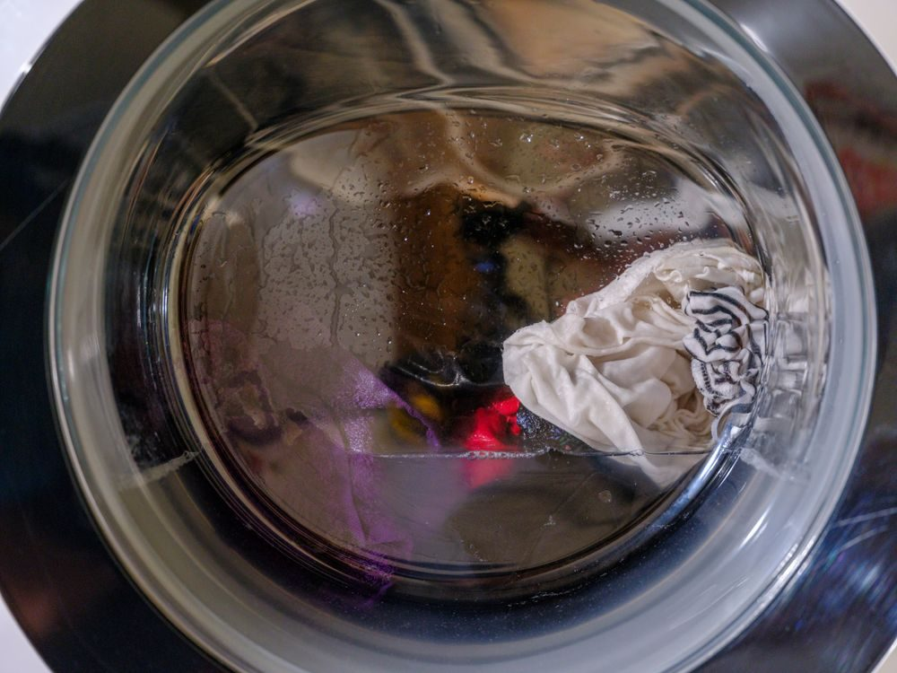
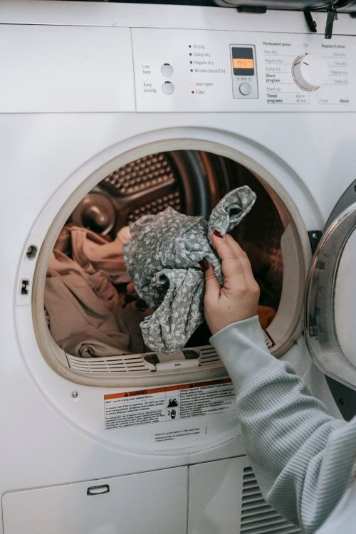

A cleaner in Long Beach
Exclusive Cleaners offers dry cleaning and laundry services in Long Beach, with same-day service when you drop off before 9:00 AM.

Exclusive Cleaners sits at 100 West Railroad Street in Long Beach. Services cover dry cleaning and laundry services, with same-day service for drop-offs before 9:00 AM at the Long Beach location.


100 W Railroad St, Long Beach, MS 39560
Monday to Friday, 7:00 AM to 6:00 PM; Saturday, 9:00 AM to 12:00 PM